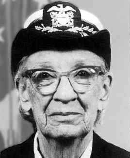

The Life of Our Lady of the Cyber Seas

Computer programmer Grace Hopper helped develop a compiler that was a precursor to the widely used COBOL language and became a rear admiral in the U.S. Navy.
“People have an enormous tendency to resist change. They love to say, 'We've always done it this way.' I try to fight that.”
—Grace Hopper
Born in New York City in 1906, Grace Hopper joined the U.S. Navy during World War II and was assigned to program the Mark I computer. She continued to work in computing after the war, leading the team that created the first computer language compiler, which led to the popular COBOL language. She resumed active naval service at the age of 60, becoming a rear admiral before retiring in 1986. Hopper died in Virginia in 1992.
Born Grace Brewster Murray in New York City on December 9, 1906, Grace Hopper studied math and physics at Vassar College. After graduating from Vassar in 1928, she proceeded to Yale University, where, in 1930, she received a master's degree in mathematics. That same year, she married Vincent Foster Hopper, becoming Grace Hopper (a name that she kept even after the couple's 1945 divorce). Starting in 1931, Hopper began teaching at Vassar while also continuing to study at Yale, where she earned a Ph.D. in mathematics in 1934—becoming one of the first few woman to earn such a degree.
Hopper, who became an associate professor at Vassar, continued to teach until World War II compelled her to join the U.S. Naval Reserve in December 1943 (she opted for the Navy, as it had been her grandfather's branch of service). She was commissioned as a lieutenant in June 1944. Given her mathematical background, Hopper was assigned to the Bureau of Ordnance Computation Project at Harvard University, where she learned to program a Mark I computer.
After the war, Hopper remained with the Navy as a reserve officer. As a research fellow at Harvard, she worked with the Mark II and Mark III computers. She was at Harvard when a moth was found to have shorted out the Mark II, and is sometimes given credit for the invention of the term "computer bug"—though she didn't actually author the term, she did help popularize it.
Wanting to continue to work with computers, Hopper moved into private industry in 1949, first with the Eckert-Mauchly Computer Corporation, then with Remington Rand, where she oversaw programming for the UNIVAC computer. In 1952, her team created the first compiler for computer languages (a compiler renders worded instructions into code that can be read by computers). This compiler was a precursor for the Common Business Oriented Language, or COBOL, a widely adapted language that would be used around the world. Though she did not invent COBOL, Hopper encouraged its adaptation.
Hopper retired from the Naval Reserve in 1966, but her pioneering computer work meant that she was recalled to active duty—at the age of 60—to tackle standardizing communication between different computer languages. She would remain with the Navy for 19 years. When she retired in 1986, at age 79, she was a rear admiral as well as the oldest serving officer in the service.
Saying that she would be "bored stiff" if she stopped working entirely, Hopper took another job post-retirement and stayed in the computer industry for several more years. She was awarded the National Medal of Technology in 1991—becoming the first female individual recipient of the honor. At the age of 85, she died in Arlington, Virginia, on January 1, 1992. She was laid to rest in the Arlington National Cemetery.
In 1997, the guided missile destroyer, USS Hopper, was commissioned by the Navy in San Francisco. In 2004, the University of Missouri has honored Hopper with a computer museum on their campus, dubbed “Grace’s Place.” On display are early computers and computer components to educator visitors on the evolution of the technology.
In addition to her programming accomplishments, Hopper's legacy includes encouraging young people to learn how to program. The Grace Hopper Celebration of Women In Computing Conference is a technical conference that encourages women to become part of the world of computing, while the Association for Computing Machinery offers a Grace Murray Hopper Award. Additionally, on her birthday in 2013, Hopper was remembered with a "Google Doodle."